stemness pluripotency
Po-Yuan Tung
2015-07-10
Last updated: 2015-08-28
Code version: 4b60929b44b585789da8bbab66261d3d17e08b6c
Current model of reprogramming suggests that pluripotency occurs in two-phases: a prolonged stochastic phase followed by a rapid deterministic phase. Chung2014 Our iPSCs were reprogrammed and cultured in mane different batches. In addition, some lines have been through different culture mediums. In order to make sure that the variance we observed at the single cell level is not cause by different levels of plupotency, we need to more rigorously estimate the cells status than just carrying out pluritest from the bulk.
Input
library("dplyr")
library("ggplot2")
theme_set(theme_bw(base_size = 16))
library("edgeR")
library("gplots")
library("RColorBrewer")Input annotation.
anno <- read.table("../data/annotation.txt", header = TRUE,
stringsAsFactors = FALSE)
head(anno) individual batch well sample_id
1 19098 1 A01 NA19098.1.A01
2 19098 1 A02 NA19098.1.A02
3 19098 1 A03 NA19098.1.A03
4 19098 1 A04 NA19098.1.A04
5 19098 1 A05 NA19098.1.A05
6 19098 1 A06 NA19098.1.A06Input molecule counts.
molecules <- read.table("../data/molecules.txt", header = TRUE,
stringsAsFactors = FALSE)Input read counts.
reads <- read.table("../data/reads.txt", header = TRUE,
stringsAsFactors = FALSE)Input list of quality single cells.
quality_single_cells <- scan("../data/quality-single-cells.txt",
what = "character")Keep only the single cells that passed the QC filters and the bulk samples.
molecules <- molecules[, grepl("bulk", colnames(molecules)) |
colnames(molecules) %in% quality_single_cells]
anno <- anno[anno$well == "bulk" | anno$sample_id %in% quality_single_cells, ]
stopifnot(ncol(molecules) == nrow(anno),
colnames(molecules) == anno$sample_id)
reads <- reads[, grepl("bulk", colnames(reads)) |
colnames(reads) %in% quality_single_cells]
stopifnot(ncol(reads) == nrow(anno),
colnames(reads) == anno$sample_id)Remove genes with zero read counts in the single cells or bulk samples.
expressed <- rowSums(molecules[, anno$well == "bulk"]) > 0 &
rowSums(molecules[, anno$well != "bulk"]) > 0
molecules <- molecules[expressed, ]
dim(molecules)[1] 17153 587expressed <- rowSums(reads[, anno$well == "bulk"]) > 0 &
rowSums(reads[, anno$well != "bulk"]) > 0
reads <- reads[expressed, ]
dim(reads)[1] 17162 587Split the bulk and single samples.
molecules_bulk <- molecules[, anno$well == "bulk"]
molecules_single <- molecules[, anno$well != "bulk"]
reads_bulk <- reads[, anno$well == "bulk"]
reads_single <- reads[, anno$well != "bulk"]Remove genes with max molecule numer larger than 1024
molecules_single <- molecules_single[apply(molecules_single,1,max) < 1024,]Correct for collision probability. See Grun et al. 2014 for details.
molecules_single_collision <- -1024 * log(1 - molecules_single / 1024)Standardization
molecules_single_cpm <- cpm(molecules_single_collision, log = TRUE)Calculate TMM-normalized read counts per million.
norm_factors_bulk <- calcNormFactors(reads_bulk, method = "TMM")
reads_bulk_cpm <- cpm(reads_bulk, log = TRUE,
lib.size = colSums(reads_bulk) * norm_factors_bulk)Expressions of pluripotency genes in iPSCs
Input pluripotency genes. A list of 27 pluripotency genes used to demonstrate iPSC heterogeneity in Narshinh2011 Gene ID conversion was done by using the DAVID http://david.abcc.ncifcrf.gov
pluripotency_genes <- read.table("../data/pluripotency-genes.txt", header = TRUE, sep="\t")Expression of plurypotency genes in iPSCs
molecules_single_pluripotency <- molecules_single_cpm[rownames(molecules_single_cpm) %in% pluripotency_genes[,2],]
reads_bulk_pluripotency <- reads_bulk_cpm[rownames(reads_bulk_cpm) %in% pluripotency_genes[,2],]
### heatmap
individual <- colnames(molecules_single_pluripotency)
color <- rep("yellow",dim(molecules_single_pluripotency)[2])
color[grep("19098", individual)] <- "red"
color[grep("19239", individual)] <- "blue"
heatmap.2(molecules_single_pluripotency, trace="none", cexRow=1, cexCol=1, margins=c(8,8), xlab="single cells", ColSideColors=color)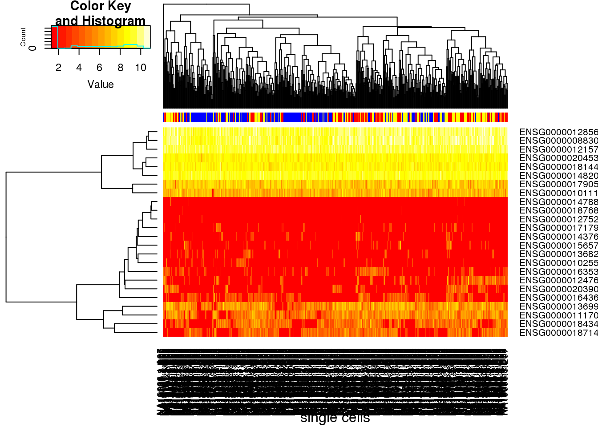
colorbulk <- rep(c("red","yellow","blue"),each=3)
heatmap.2(reads_bulk_pluripotency, trace="none", cexRow=1, cexCol=1, margins=c(8,8),xlab="bulk", ColSideColors=colorbulk)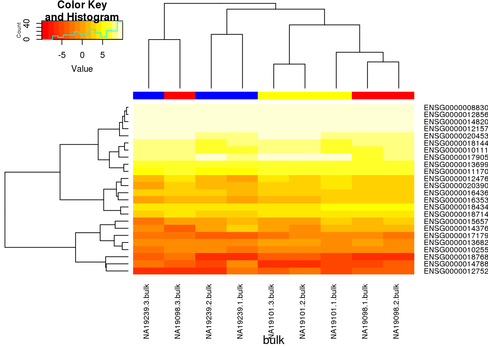
pca_single_cells <- prcomp(t(molecules_single_pluripotency), retx = TRUE, scale. = TRUE, center = TRUE)
plot(pca_single_cells)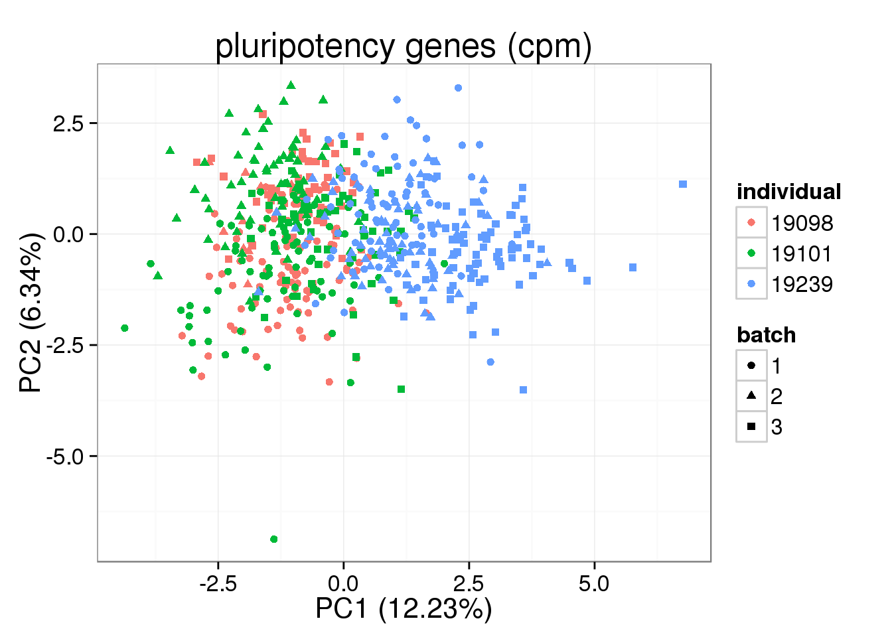
pca_single_cells$perc_explained <- pca_single_cells$sdev^2 / sum(pca_single_cells$sdev^2) * 100
plot(pca_single_cells$perc_explained)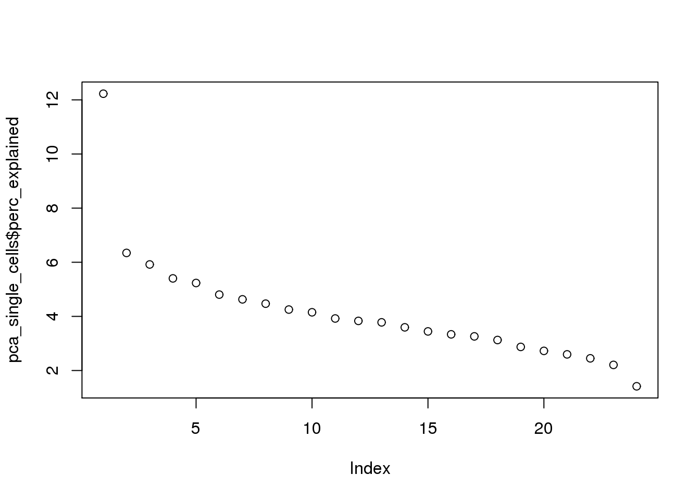
anno_single <- anno[anno$well != "bulk",]
stopifnot(colnames(pca_single_cells) ==
paste(paste0("NA", anno_single$individual),
anno_single$batch,
anno_single$well, sep = "."))
pca_single_cells_anno <- cbind(anno_single, pca_single_cells$x)
ggplot(pca_single_cells_anno, aes(x = PC1, y = PC2, col = as.factor(individual), shape = as.factor(batch))) +geom_point()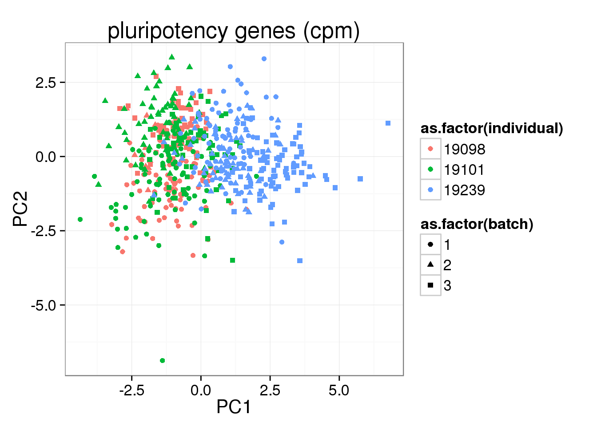
Use LCLs as a negative control
Input LCL annotation.
anno_lcl <- read.table("../data/annotation-lcl.txt", header = TRUE,
stringsAsFactors = FALSE)
head(anno_lcl) individual batch well sample_id full_lane
1 19239 1 A01 NA19239.1.A01 FALSE
2 19239 1 A02 NA19239.1.A02 FALSE
3 19239 1 A03 NA19239.1.A03 FALSE
4 19239 1 A04 NA19239.1.A04 FALSE
5 19239 1 A05 NA19239.1.A05 FALSE
6 19239 1 A06 NA19239.1.A06 FALSEInput LCL molecule counts.
molecules_lcl <- read.table("../data/molecules-lcl.txt", header = TRUE,
stringsAsFactors = FALSE)Input LCL read counts.
reads_lcl <- read.table("../data/reads-lcl.txt", header = TRUE,
stringsAsFactors = FALSE)Input list of quality single cells of LCL.
quality_single_cells_lcl <- scan("../data/quality-single-cells-lcl.txt",
what = "character")Keep only the single cells that passed the QC filters and the bulk samples.
molecules_lcl <- molecules_lcl[colnames(molecules_lcl) %in% quality_single_cells_lcl]
anno_lcl <- anno_lcl[anno_lcl$full_lane == "FALSE" & anno_lcl$sample_id %in% quality_single_cells_lcl, ]
stopifnot(ncol(molecules_lcl) == nrow(anno_lcl),
colnames(molecules_lcl) == anno_lcl$sample_id)
molecules_single_lcl <- molecules_lcl[, anno_lcl$full_lane == "FALSE"]molecules_single_lcl <- molecules_single_lcl[apply(molecules_single_lcl,1,max) < 1024,]
molecules_single_collision_lcl <- -1024 * log(1 - molecules_single_lcl / 1024)Standardization
molecules_single_cpm_lcl <- cpm(molecules_single_collision_lcl, log = TRUE)Expression of plurypotency genes in LCL
molecules_single_pluripotency_lcl <- molecules_single_cpm_lcl[rownames(molecules_single_cpm_lcl) %in% pluripotency_genes[,2],]
heatmap.2(molecules_single_pluripotency_lcl, trace="none", cexRow=1, cexCol=1, margins=c(8,8),xlab="single cells", ylab= "pluripotency gene")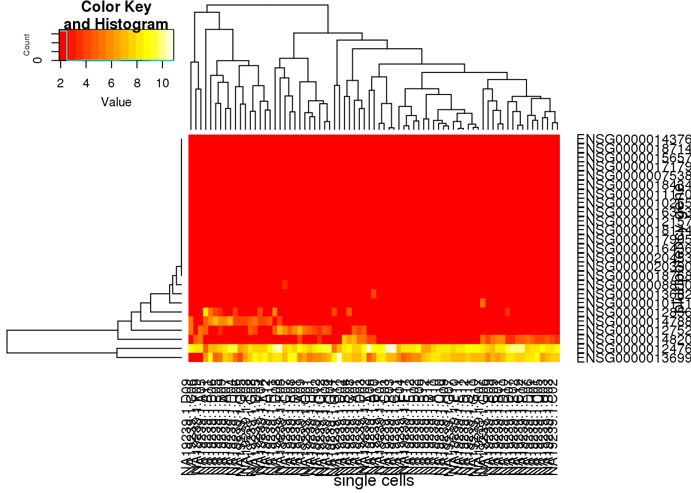
### merge two cell types
molecules_single_pluripotency_all <- merge(molecules_single_pluripotency,molecules_single_pluripotency_lcl,by = "row.names", all = TRUE)
### remove the column and na for data.matrix
molecules_single_pluripotency_all_matrix <- as.matrix(molecules_single_pluripotency_all[,2:654])
rownames(molecules_single_pluripotency_all_matrix) <- molecules_single_pluripotency_all[,1]
molecules_single_pluripotency_all_matrix[is.na(molecules_single_pluripotency_all_matrix)] <- 0
### heatmap
heatmap.2(molecules_single_pluripotency_all_matrix, trace="none", cexRow=1, cexCol=1, margins=c(8,8), xlab="single cells", ylab= "pluripotency gene")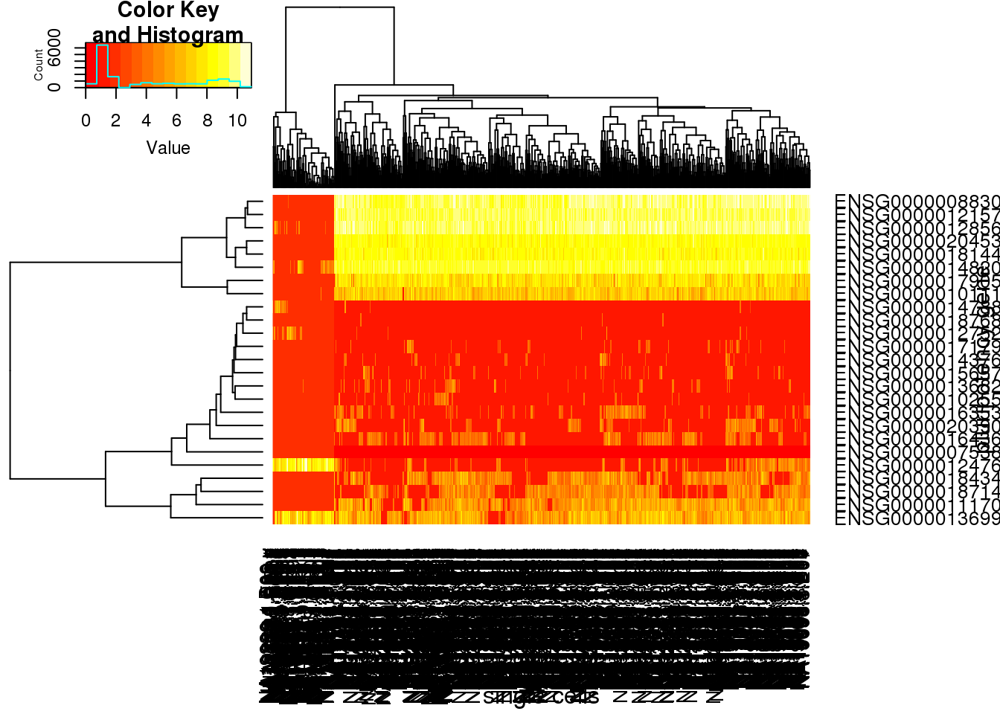
The CV between iPSC and LCL
The CV values are calculated based on standardized molecule numbers (cpm and log transformed)
## select 19239 iPSC
molecules_single_cpm_19239 <- molecules_single_cpm[,grep(19239,colnames(molecules_single_cpm))]
## keep the common genes iPSCs and LCLs data
molecules_single_cpm_lcl_19239 <- molecules_single_cpm_lcl[rownames(molecules_single_cpm_lcl) %in% rownames(molecules_single_cpm_19239), ]
molecules_single_cpm_iPSC_19239 <- molecules_single_cpm_19239[rownames(molecules_single_cpm_19239) %in% rownames(molecules_single_cpm_lcl_19239),]
## calculate CV
CV <- function(x){apply(x,1,sd)/apply(x,1,mean)}
CV_iPSC <- CV(molecules_single_cpm_iPSC_19239)
CV_LCL <- CV(molecules_single_cpm_lcl_19239)
## combine the CV values from the 2 cell types
iPSC_LCL <- as.data.frame(cbind(CV_iPSC,CV_LCL))
## select ERCC
iPSC_LCL$ERCC <- grepl("ERCC", rownames(iPSC_LCL))
## color palette
cbPalette <- c("#999999", "#0000FF", "#990033", "#F0E442", "#0072B2", "#D55E00", "#CC79A7", "#009E73")
ggplot(iPSC_LCL, aes(x = CV_iPSC, y = CV_LCL, col = ERCC)) + geom_point(size = 3, alpha = 0.5) + scale_colour_manual(values=cbPalette) + stat_function(fun= function(x) {x}, col= "#56B4E9") + labs(x = "CV of iPSC", y = "CV of LCL", title = "cpm with log")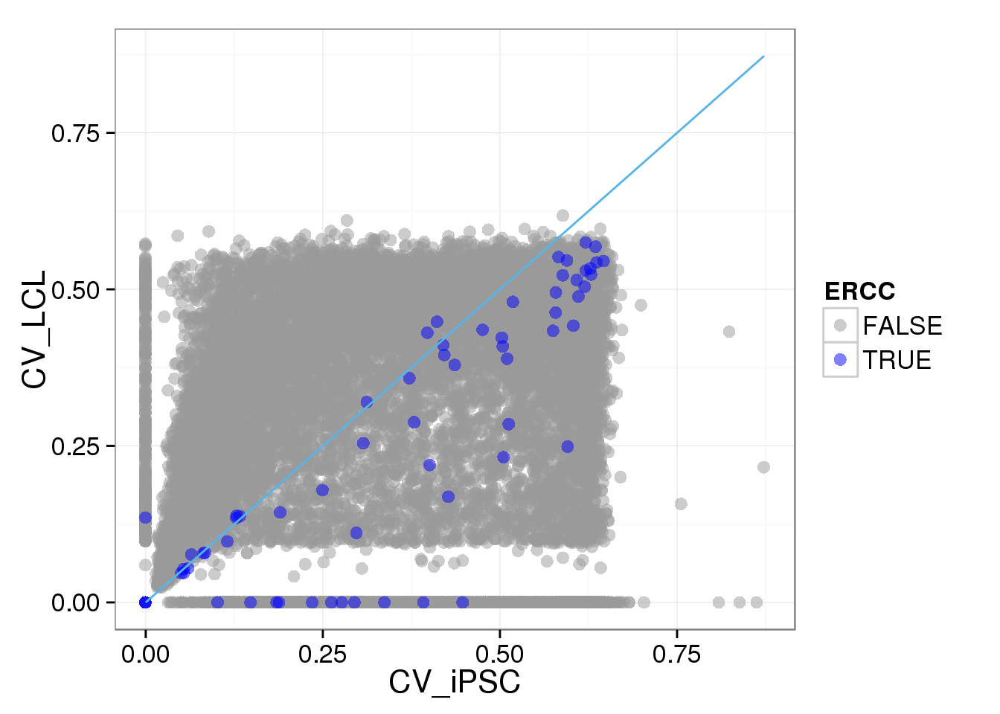
Use the non-standardized molecule numbers (no cpm) or standardized but not log transformed (cpm no log)
## select 19239 iPSC
molecules_single_collision_19239 <- molecules_single_collision[,grep(19239,colnames(molecules_single_collision))]
## keep the common genes iPSCs and LCLs data
molecules_single_collision_lcl_19239 <- molecules_single_collision_lcl[rownames(molecules_single_collision_lcl) %in% rownames(molecules_single_collision_19239), ]
molecules_single_collision_iPSC_19239 <- molecules_single_collision_19239[rownames(molecules_single_collision_19239) %in% rownames(molecules_single_collision_lcl_19239),]
## calculate CV
iPSC_LCL$CV_iPSC_collision <- CV(molecules_single_collision_iPSC_19239)
iPSC_LCL$CV_LCL_collision <- CV(molecules_single_collision_lcl_19239)
iPSC_LCL$mean_iPSC_collision <- apply(molecules_single_collision_iPSC_19239,1, mean)
iPSC_LCL$mean_LCL_collision <- apply(molecules_single_collision_lcl_19239,1, mean)
ggplot(iPSC_LCL, aes(x = mean_iPSC_collision, y = CV_iPSC_collision, col = ERCC)) + geom_point(size = 3, alpha = 0.5) + scale_colour_manual(values=cbPalette) + scale_x_log10()Warning: Removed 1073 rows containing missing values (geom_point).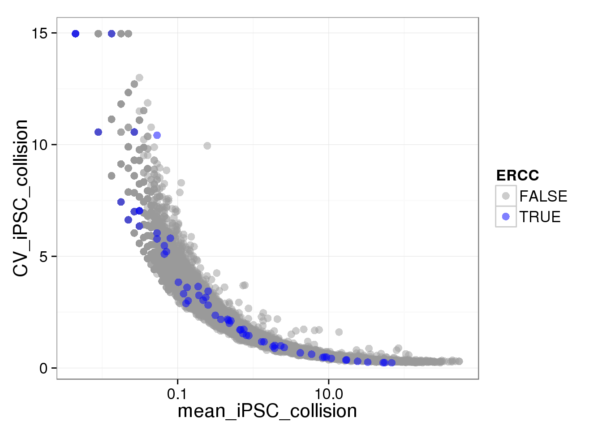
ggplot(iPSC_LCL, aes(x = mean_LCL_collision, y = CV_LCL_collision, col = ERCC)) + geom_point(size = 3, alpha = 0.5) + scale_colour_manual(values=cbPalette) + scale_x_log10()Warning: Removed 4184 rows containing missing values (geom_point).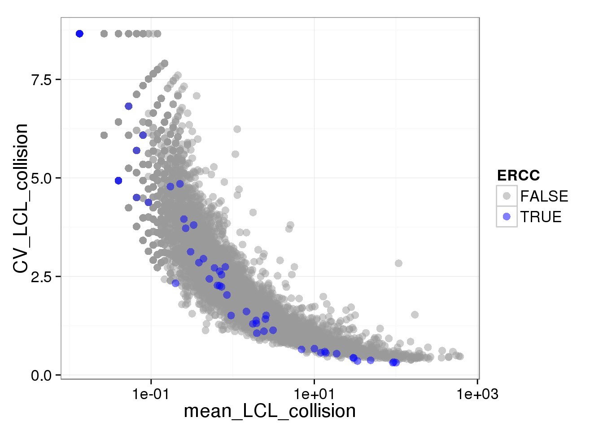
ggplot(iPSC_LCL, aes(x = CV_iPSC_collision, y = CV_LCL_collision, col = ERCC)) + geom_point(size = 3, alpha = 0.5) + scale_colour_manual(values=cbPalette) + stat_function(fun= function(x) {x}, col= "#56B4E9") + scale_x_log10() + scale_y_log10() + labs(x = "CV of iPSC", y = "CV of LCL", title = "non standarized")Warning: Removed 4474 rows containing missing values (geom_point).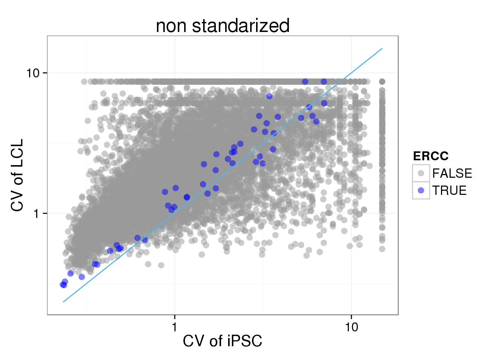
## cpm without log
molecules_single_cpmnolog_lcl_19239 <- cpm(molecules_single_collision_lcl_19239, log = FALSE)
molecules_single_cpmnolog_iPSC_19239 <- cpm(molecules_single_collision_iPSC_19239, log = FALSE)
## calculate CV of cpm no log
iPSC_LCL$CV_iPSC_cpmnolog <- CV(molecules_single_cpmnolog_iPSC_19239)
iPSC_LCL$CV_LCL_cpmnolog <- CV(molecules_single_cpmnolog_lcl_19239)
ggplot(iPSC_LCL, aes(x = CV_iPSC_cpmnolog, y = CV_LCL_cpmnolog, col = ERCC)) + geom_point(size = 3, alpha = 0.5) + scale_colour_manual(values=cbPalette) + stat_function(fun= function(x) {x}, col= "#56B4E9") + scale_x_log10() + scale_y_log10() + labs(x = "CV of iPSC", y = "CV of LCL", title = "cpm no log")Warning: Removed 4474 rows containing missing values (geom_point).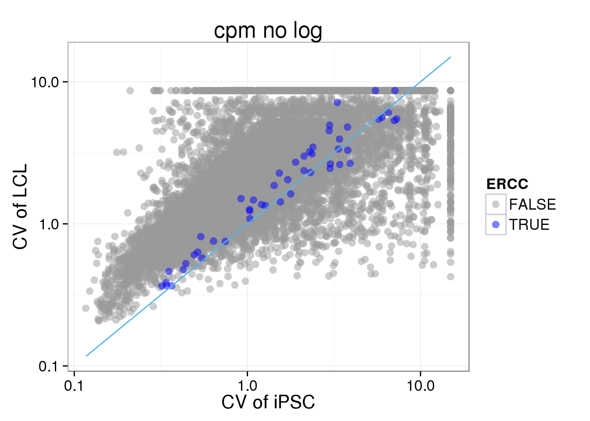
## density plot
CV_cmpnolog <- data.frame(CV = c(iPSC_LCL$CV_iPSC_cpmnolog,iPSC_LCL$CV_LCL_cpmnolog), cell_type = rep(c("iPSC", "LCL"), each = 17130))
ggplot(CV_cmpnolog, aes(x = CV, fill = cell_type)) + geom_density(alpha = 0.5) + labs(title = "cpm no log")Warning: Removed 1073 rows containing non-finite values (stat_density).Warning: Removed 4184 rows containing non-finite values (stat_density).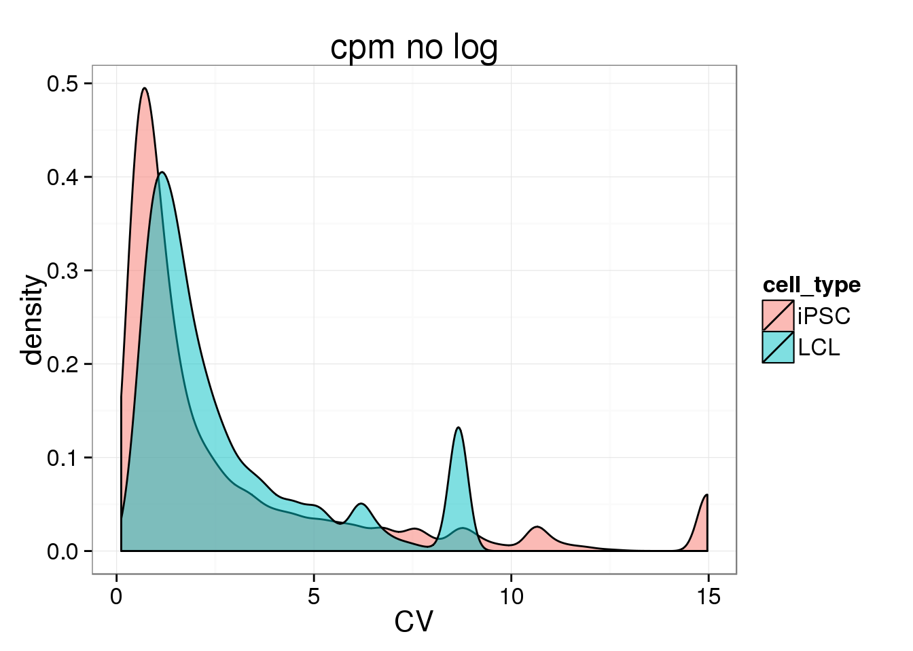
## MA plot
iPSC_LCL$fold_change_CV <- log2(iPSC_LCL$CV_iPSC_cpmnolog / iPSC_LCL$CV_LCL_cpmnolog)
iPSC_LCL$mean_CV <- 0.5 * log2((iPSC_LCL$CV_iPSC_cpmnolog + iPSC_LCL$CV_LCL_cpmnolog))
ggplot(iPSC_LCL, aes(x = mean_CV, y = fold_change_CV, col = ERCC)) + geom_point(size = 3, alpha = 0.5) + scale_colour_manual(values=cbPalette) + labs(x = "1/2(iPSC.CV + LCL.CV)", y = "log2(iPSC.CV/LCL.CV)", title = "cpm no log")Warning: Removed 4474 rows containing missing values (geom_point).
Look at only batch one of 19239 to see if sample size (cell numbers) matters.
## look at only one batah of iPSC
molecules_single_cpmnolog_iPSC_19239.1 <- molecules_single_cpmnolog_iPSC_19239[,grep(19239.1,colnames(molecules_single_cpmnolog_iPSC_19239))]
iPSC_LCL$CV_iPSC_cpmnolog_1 <- CV(molecules_single_cpmnolog_iPSC_19239.1)
ggplot(iPSC_LCL, aes(x = CV_iPSC_cpmnolog_1, y = CV_LCL_cpmnolog, col = ERCC)) + geom_point(size = 3, alpha = 0.5) + scale_colour_manual(values=cbPalette) + stat_function(fun= function(x) {x}, col= "#56B4E9") + scale_x_log10() + scale_y_log10() + labs(x = "CV of iPSC batch 1", y = "CV of LCL", title = "cpm no log")Warning: Removed 5036 rows containing missing values (geom_point).
CV_cmpnolog_1 <- data.frame(CV = c(iPSC_LCL$CV_iPSC_cpmnolog_1,iPSC_LCL$CV_LCL_cpmnolog), cell_type = rep(c("iPSC", "LCL"), each = 17130))
ggplot(CV_cmpnolog_1, aes(x = CV, fill = cell_type)) + geom_density(alpha = 0.5) + labs(title = "cpm no log, 19239 batch 1")Warning: Removed 2477 rows containing non-finite values (stat_density).Warning: Removed 4184 rows containing non-finite values (stat_density).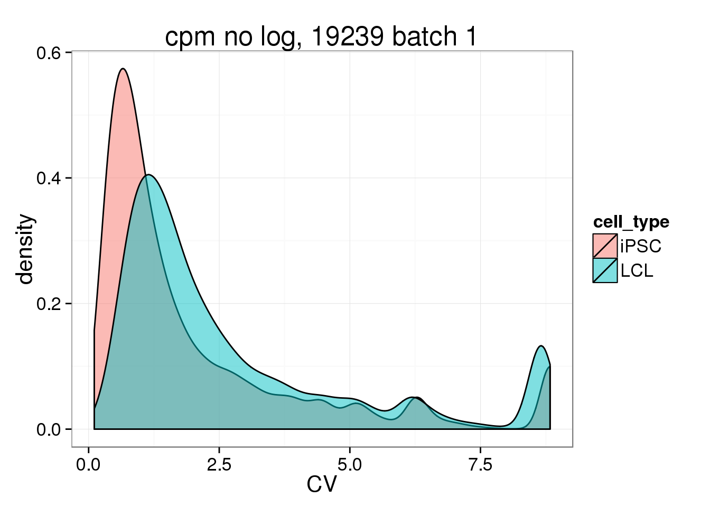 ## Session information
sessionInfo()R version 3.2.0 (2015-04-16)
Platform: x86_64-unknown-linux-gnu (64-bit)
locale:
[1] LC_CTYPE=en_US.UTF-8 LC_NUMERIC=C
[3] LC_TIME=en_US.UTF-8 LC_COLLATE=en_US.UTF-8
[5] LC_MONETARY=en_US.UTF-8 LC_MESSAGES=en_US.UTF-8
[7] LC_PAPER=en_US.UTF-8 LC_NAME=C
[9] LC_ADDRESS=C LC_TELEPHONE=C
[11] LC_MEASUREMENT=en_US.UTF-8 LC_IDENTIFICATION=C
attached base packages:
[1] stats graphics grDevices utils datasets methods base
other attached packages:
[1] RColorBrewer_1.1-2 gplots_2.17.0 edgeR_3.10.2
[4] limma_3.24.9 ggplot2_1.0.1 dplyr_0.4.2
[7] knitr_1.10.5
loaded via a namespace (and not attached):
[1] Rcpp_0.12.0 magrittr_1.5 MASS_7.3-40
[4] munsell_0.4.2 colorspace_1.2-6 R6_2.1.1
[7] stringr_1.0.0 plyr_1.8.3 caTools_1.17.1
[10] tools_3.2.0 parallel_3.2.0 grid_3.2.0
[13] gtable_0.1.2 KernSmooth_2.23-14 DBI_0.3.1
[16] gtools_3.5.0 htmltools_0.2.6 yaml_2.1.13
[19] assertthat_0.1 digest_0.6.8 reshape2_1.4.1
[22] formatR_1.2 bitops_1.0-6 evaluate_0.7
[25] rmarkdown_0.6.1 labeling_0.3 gdata_2.16.1
[28] stringi_0.4-1 scales_0.2.4 proto_0.3-10